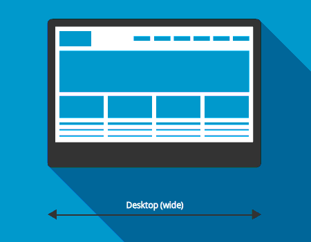

Inicio
Documentação para fins de consulta e conhecimento sobre como elaborar um projeto de portal com os conceitos da Mundiware.
Em constante atualização.
- Versão: 1.0
- Autor: Mundiware
- Criado: 20 de janeiro, 2022
- Atualizado: 20 de janeiro, 2022
Se você tiver alguma dúvida que esteja além do escopo deste arquivo de ajuda, ou caso tenha uma sugestão/correção para algo aqui informado sinta-se à vontade para procurar um de nossos colaboradores.
Configurando o ambiente
Atualmente quando um projeto se inicia, nós utilizamos o SFTP para desenvolvimento inicial.
O Secure File Transfer Protocol (SFTP) é um protocolo de transferência segura de dados. Ele é projetado
para estabelecer uma conexão entre um servidor de internet particular (ou computador) para que os usuários
possam transferir arquivos (download) para o computador ou para o servidor (upload).
O objetivo principal é transferir dados, mas também pode ser utilizado para obter acesso geral ao sistema
de arquivos do servidor FTP. O protocolo SFTP é executado em um canal seguro
Recomendamos o programa Visual Studio Code como principal ferramenta de trabalho no tocante ao desenvolvimento front-end de nossos portais, e para que seja possível configurar o ambiente de SFTP precisaremos de uma extensão chamada SFTP, porém há diversas extensões com este nome, a que utilizamos tem como autor: Natizysmkunk clique aqui para instalar a extensão em seu programa.
Após efetuado a instalação da instalação, para uma documentação mais direta, segue o passo a passo em vídeo de como configurar o ambiente SFTP do Projeto em sua máquina:
Estruturas de pastas
Após feito a configuração do SFTP, e feito o download dos arquivos do diretório do projeto, por padrão um portal nasce com a seguinte hierarquia de pastas:
assets- Todos os arquivos de: CSS, JavaScript, Imagens, Fonts, Libs.json- Arquivos JSON para widgets, e demais usos.modules- Onde fica alocado os arquivos do Article,Home,Category,Search..pages- Demais páginas avulsas do projeto ficam alocadas aqui.templates- Arquivos para configurações vitais do portalwidgets- Todos os widgets do projeto.
Este é o conjunto de pastas vitais para o início do projeto, de acordo com as circustâncias pode existir novas pastas para novas funções que venham a ser implementadas.
Modules
Pasta dos módulos do site. Os arquivos mais comuns são HeadMetasHome, HomeCSSBundle, Top, Menu,
Footer e HomeJSBundle. Os módulos são arquivos externos que podem ser incorporados dentro do
template desejado (muito parecido com o comando include do PHP). Todos os arquivos desta pasta devem
conter a extensão .module
- Metas - módulo que armazena o XHTML das tags
metada home do site. Também é comum a inclusão da tagtitleneste arquivo. - Components - módulo que armazena o XHTML dos componentes vitais do site, como topResponsivo e footerResponsivo.
- Home - módulo que armazena os XHTML da home do site.
- Article - módulo que armazena os XHTML do article do site. Esse é o módulo referente a página
de artigo, tendo versões como:
articleEspecialearticleAmp. - Category - módulo que armazena o XHTML da página de categoria do site. Nesse módulo temos chamadas de matérias de cada categoria (ex: política, esportes, cultura).
Pages
Pasta das páginas do site. Seus arquivos funcionam de forma parecida com o template, sendo estes usados
preferencialmente para implementação de páginas externas (ex: RSS, Recuperar senha, Publicidade Legal..).
Também é possível usá-los como um backup dos templates e/ou criar páginas teste. Todos os arquivos desta
pasta devem conter a extensão .page.
Templates
Pasta dos templates do site. Contém por padrão os arquivos Home, Category e Articles. Todos os
arquivos desta pasta devem conter a extensão .template_tipoDoTemplate
- Home - possui a extensão
.template_HOME. É o template que armazena a estrutura da home do site. - Category - possui a extensão
.template_CATEGORY. É o template que armazena a estrutura das categorias do site (ex: política, esportes, cultura). - Articles - possui a extensão
.template_ARTICLE. É o template que armazena a estrutura da página interna do site (matérias).
Responsividade
Antes de iniciarmos a ordem cronológica de etapas para a elaboração do portal, se faz necessário
compreendermos o modelo responsivo que iremos aplicar no projeto, atualmente adotamos 2 sistemas, o
Responsivo Padrão e o Mobile e Desktop com ?d=1.
Responsivo Padrão
Quando seguimos este modelo de responsividade, o modo como os elementos serão tratados fica bastante claro, uma vez que o objetivo inicial principal é fazer com que todos os elementos sejam responsivos em todas as telas, como apresentado na ilustração abaixo:
Na prática, o design responsivo é o design que responde ao contexto do usuário. Se o usuário acessar pelo celular, por exemplo, os blocos de conteúdo são reposicionados para facilitar a leitura e os botões e fontes ficam maiores para facilitar o clique, isso acontece para que usuário tenha a melhor experiência de uso possível, independente da tela.
Mobile e Desktop com ?d=1
Quando seguimos no caminho de ser feito modelo para desktop e mobile, não se foge muito do principio de
responsividade convencional, ainda a aplicamos, porém, utilizando breakpoints específicos. No modo
desktop utilizamos max-width de 1200px, e levamos o layout até min-width:
1000px. E a partir dai utilizamos Media Queries a partir dos 700px, para ajustar o elementos do portal
para a versão mobile.
redirect.module
Este módulo é responsável por fazer a verificação se o usuário está acessando o portal através de um
dispositivo mobile ou não, após feita a checagem direciona ele para a versão respectiva, é um módulo
indispensável na aplicação da responsividade. É fácil localizado em /modules/redirect.module.
MWTPL
Em um portal desenvolvido pela Mundiware utilizamos a MWTPL, um conjunto de tags próprias para a implementação do conteúdo nas páginas do site, seu uso correto é primordial para o funcionamento do online. Todas as tags da Mundiware deverão ser colocadas sempre ao chamar um conteúdo externo, seja ele folha de estilos, imagens, javascript e, é claro, o conteúdo localizado no banco de dados.
Tags
Todas as tags devem iniciar sua nomenclatura com mw: na frente (ex:
<mw:nomeDaTag>…</mw:nomeDaTag>).
Todas as tags possuem propriedades.
Não há diferenciação entre maiúsculas e minúsculas (ex:
<MW:nomedatag>…</mw:NOMEdaTag>).
<mw:set/>
Usada para criar uma variável e armazenar algo nela.
| Características | Atributos | Descrição |
|---|---|---|
| - Tag sem conteúdo | var, value |
var - cria uma variável value - define o valor da variável |
Exemplo:
<mw:set var="excluirCategorias" value="list('Nome da categoria1', 'Nome da categoria2')"/><mw:loadArticles/>
Usada para carregar as matérias de uma determinada editoria.
| Características | Atributos | Descrição |
|---|---|---|
| - Tag sem conteúdo - Implementada preferencialmente antes da tag |
var, amount, categoryName, includeText, withSpecialImages, addToExclusionLists, exclusionLists, excludeCategoriesByNames, articleId, loadImages, loadSpecialImages, categoryId, includeViewCount, loadThumbnails, offset, countVar |
Var - Cria uma variável Amount - Define a quantidade de artigos que será carregado CategoryName - Define de qual categoria será carregado os artigos através do nome CategoryId - Define de qual categoria será carregado os artigos através do ID ArticleId - Define um artigo específico pelo ID IncludeText - Define se carregará o texto dos artigos WithSpecialImages - Define que imagens especiais dos artigos será carregada LoadImages - Define se carregará todas as imagens de uma determinada categoria LoadSpecialImages - Define que imagens especiais dos artigos será carregada LoadThumbnails - Define se carregará as thumbnails das imagens AddToExclusionLists - Adiciona os artigos à lista de exclusão ExclusionLists - Lista de exclusão no qual não deixa repetir o mesmo artigo da categoria nos resultados de busca ExcludeCategoriesByNames - Adiciona as categorias à lista de exclusão IncludeViewCount - Define se carregará o número da quantidade total de artigos Offset - Define quantos artigos serão pulados CountVar - Define quantos artigos totais serão carregados (para paginação) |
Exemplo1:
<mw:loadArticles var="ArtigosCategoria" categoryName=" 'Nome da categoria1', 'Nome da categoria2' " amount="3" includeText="true" withSpecialImages="list ('tipoDaImagem')"/>Exemplo2:
<mw:loadArticles var="articleInfo" articleId="article.articleId" loadImages="false" loadSpecialImages="list('COVER')"/>Exemplo3:
<mw:loadArticles var="searchedNews" loadImages="true" loadSpecialImages="list('Cover')" SearchedValue="search" offset="0" amount="pageSize" countVar="articlesCount"/><mw:applyTemplate/>
Usada para aplicar um módulo, template ou page.
| Características | Atributos | Descrição |
|---|---|---|
| - Tag sem conteúdo | path | path - chama um template, módulo ou page pelo seu diretório |
Exemplo:
<mw:applyTemplate path="modules/nomeDoModulo.module"/><mw:iterator>...</mw:iterator>
Usada para criar uma repetição de conteúdo.
| Características | Atributos | Descrição |
|---|---|---|
| - Tag com conteúdo | value, var, limit, offset, index |
value - insere o valor de uma variável já declarada anteriormente var - cria uma variável local limit - define quantos artigos serão mostrados offset - define quantos artigos serão pulados index - |
Exemplo:
<iterator value="ArticoManchete" var="article">
...
</iterator><mw:url>...</mw:url>
Usada em todas as urls que fazem ligação com os arquivos do site e conteúdos do banco de dados.
| Características | Atributos | Descrição |
|---|---|---|
| - Tag com ou sem conteúdo - Pode ser usada dentro de outra tag HTML |
value, path |
value - faz o caminho todo da URL path - faz o caminho somente da raiz do site |
Exemplo1:
<div style="background-image: url('<mw:Url value='imageArticle.path'/>')">
...
</div>Exemplo2:
<a href="<mw:Url path='~/'/><mw:property value='categoryInfo.name'/>">
...
</a><mw:property/>
Usada para imprimir algum conteúdo do banco de dados.
| Características | Atributos | Descrição |
|---|---|---|
| - Tag sem conteúdo - Pode ser usada dentro de outra tag HTML |
value, format, length |
value - define o conteúdo que será inserido format - define formato de data e hora length - limita a quantidade de caracteres a ser mostrado |
Exemplo1:
<mw:property value="article.header"/>Exemplo2:
<mw:property value="article.publishDate" format="HH:mm'h' dd/MM/yyyy"/>Exemplo3:
<mw:property value="article.safeLead" length="100"/><mw:if>...</mw:if>
Usada para a criação de uma condição e sua aplicação caso for verdadeira.
| Características | Atributos | Descrição |
|---|---|---|
| - Tag com conteúdo | test | test - insere a condição que deseja criar |
Exemplo1:
<mw:if test="!isEmpty(article.author)">
...
</mw:if>Exemplo2:
<mw:if test="article.publishDate != article.versionDate">
...
</mw:if>Exemplo3:
<mw:if test="article.imagesNormal.size > 0">
...
</mw:if><mw:else>...</mw:else>
Usada caso a condição do <mw:if> for falsa.
| Características | Atributos | Descrição |
|---|---|---|
| - Tag com conteúdo - Tag sem atributos - Está relacionada com a tag <mw:if> |
Exemplo:
<mw:if test="article.imagesNormal.size gt 1">
...
</mw:if>
<mw:else>
...
</mw:else><mw:elseIf>...</mw:elseIf>
Usada caso a condição do <mw:if> for falsa e criando
uma nova condição.
| Características | Atributos | Descrição |
|---|---|---|
| - Tag com conteúdo - Está relacionada com a tag <mw:if> |
test | test - insere a condição que deseja criar |
Exemplo:
<mw:if test="article.imagesNormal.size>0">
...
</mw:if>
<mw:elseIf test="article.allImages.size>0">
...
</mw:elseIf><mw:renderStyles>...</mw:renderStyles>
Usada para compactar todos os estilos externos usados na página.
| Características | Atributos | Descrição |
|---|---|---|
| - Tag com conteúdo | makeBundle | makeBundle - permite ou nega a compactação do conteúdo num bundle |
Exemplo:
<mw:RenderStyles makeBundle="true">
...
</mw:RenderStyles><mw:renderScripts>...</mw:renderScripts>
Usada para compactar todos os estilos externos usados na página.
| Características | Atributos | Descrição |
|---|---|---|
| - Tag com conteúdo | makeBundle | makeBundle - permite ou nega a compactação do conteúdo num bundle |
Exemplo:
<mw:RenderScripts makeBundle="false">
...
</mw:RenderScripts><mw:param/>
Usada para chamar um CSS ou JavaScript externos.
| Características | Atributos | Descrição |
|---|---|---|
| - Tag sem conteúdo - Está relacionada com as tags <mw:renderStyles> e
<mw:renderScripts> |
value | value - define o caminho do css ou javascript |
Exemplo:
<mw:param value="js/bootstrap.min.js"/>Article
Um article pode ser um module, uma page ou até estar direto no template, apesar de usarmos, por padrão, como um module. Em articles é comum usarmos as tags
Changelog
Veja o que há de novo adicionado, alterado, corrigido, aprimorado ou atualizado nas versões mais recentes.
Version 1.0 (20 de janeiro, 2022)
Documentação em desenvolvimento
- Adicionado
- Corrigido
- Atualizado